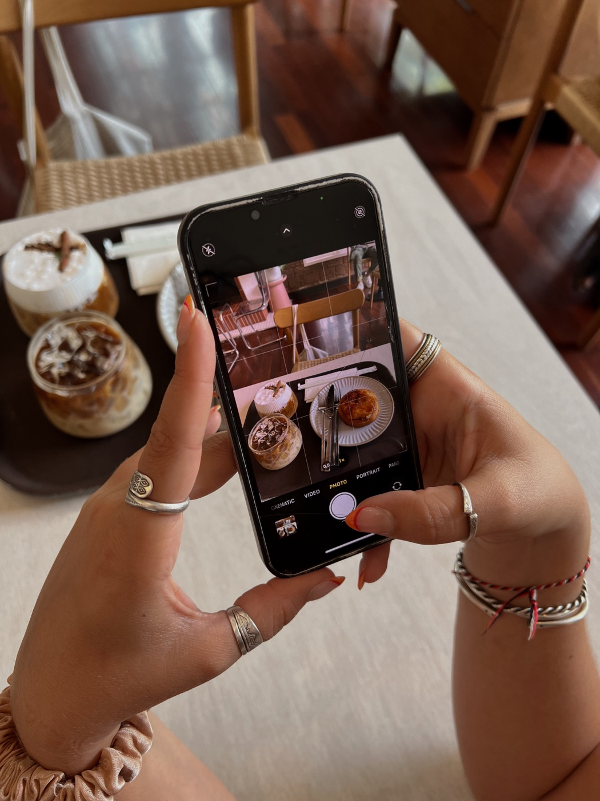

2 Élles Edit · Contexto
Qual será o futuro das publis nas redes sociais?
A resposta pode surpreender quem ainda aposta apenas em alcance.

O comportamento do público mudou mais rápido que as campanhas. O que as pesquisas mostram sobre o presente das publis? O levantamento da Nozy parte de uma pergunta simples: as pessoas realmente odeiam publicidade nas redes sociais ou rejeitam apenas as publis que parecem artificiais? A resposta muda toda a discussão.
Os sinais apontam que o problema não é a existência de conteúdo patrocinado. O público continua disposto a assistir, desde que a recomendação faça sentido dentro da rotina e da linguagem de quem publica. Em outras palavras, a confiança passou a pesar mais do que a exposição.
O que mudou nos últimos anos? Antes, bastava reunir audiência. Hoje, isso já não garante atenção, interesse ou influência. Com feeds saturados e algoritmos distribuindo conteúdo o tempo todo, a régua de qualidade ficou muito mais alta.
A pesquisa também indica um padrão importante: humor, experiências reais, demonstrações de uso e opiniões honestas tendem a gerar muito mais identificação do que roteiros excessivamente publicitários. A publi deixou de competir apenas por visualizações. Agora disputa credibilidade.

O que isso significa para marcas e criadores? Para as marcas, significa escolher parceiros pela afinidade com a comunidade, não apenas pelos números. Para os criadores, cada parceria passa a influenciar diretamente a confiança construída com a audiência.
Isso também explica por que campanhas menores, mas coerentes, frequentemente entregam resultados mais consistentes do que grandes ações que parecem desconectadas da identidade de quem comunica.
E o futuro das publis nas redes sociais? Tudo indica que o conteúdo patrocinado continuará crescendo. A diferença é que as publis mais relevantes serão aquelas que se parecem menos com propaganda e mais com recomendações que fariam sentido mesmo sem um contrato.
O algoritmo continuará distribuindo conteúdo. A decisão de acreditar continuará sendo das pessoas. O futuro das publis não será decidido por quem interrompe melhor a atenção, mas por quem consegue transformar publicidade em uma conversa relevante, transparente e coerente com a confiança conquistada ao longo do tempo.
E fica a pergunta: qual influenciadora ainda faz publis que realmente prendem a sua atenção de forma natural, confiável e convincente?
Produzido com ajuda de Inteligência Artificial, editado por uma humana e inspirado no artigo "Nozy Reports #07 – Futuro das Publis" — Nozy.